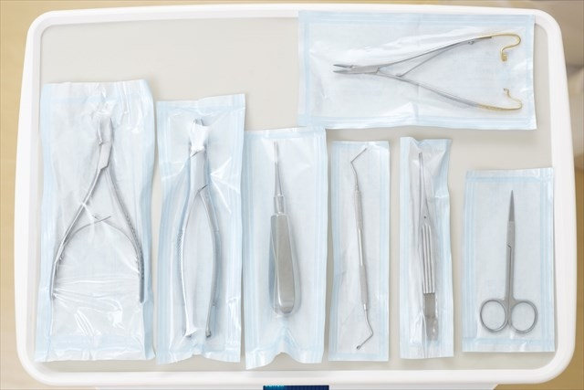

私たちは皆さまに喜んでもらえる
歯科クリニックを目指しています。
患者様とコミュニケーションをとる方法が最善であると考え、
お話を聞かせていただき、ご要望を理解した上で一番良いと思われる治療法をご提案いたします。
「痛い」「怖い」「治療内容がわからない」そんな“不安”に配慮した歯科医院です。

院長・医学博士川 崎 拓 真
歯科衛生士高 木 陽 子
インプラント担当医宮 崎 将 也
虫歯の治療
虫歯初期の治療から、虫歯の進行が進んでしまった歯の根っこの治療など、保険診療から自費診療まで行っています。
インプラント
インプラントの認定を受けたドクターの他にインプラントのスペシャリスト監修の元、万全の体制で施術いたします。
歯周病治療
歯科衛生士が細密な歯周病チェックと歯ブラシでは届かない歯周ポケットを超音波器具を使ってクリーニングします。
土曜の午後診療は18:00まで
日曜、祝日は休診日となります。
| 診療時間 | 月 | 火 | 水 | 木 | 金 | 土 | 日 |
|---|---|---|---|---|---|---|---|
| 9:00 ~13:00 | ○ | ○ | ○ | ○ | ○ | ○ | 休診 |
| 15:00~21:00 | ○ | ○ | ○ | ○ | ○ | 18:00 | 休診 |
| 勤務表 | 月 | 火 | 水 | 木 | 金 | 土 | 日 | |||||||
|---|---|---|---|---|---|---|---|---|---|---|---|---|---|---|
| 9:00~21:00 | Dr 田中 | ― | Dr 田中 | DH 織田 | ― | DH 織田 | Dr 田中 | DH 織田 | Dr 田中 | DH 織田 | Dr 田中 | DH 織田 | ― | |
| Dr 佐藤 | DH 乾 | Dr 佐藤 | DH 乾 | Dr 佐藤 | DH 乾 | Dr 佐藤 | DH 乾 | ― | DH乾 | Dr佐藤 | ― | |||
| Dr 鈴木 | ― | Dr 鈴木 | ― | Dr 鈴木 | ― | Dr 鈴木 | ― | Dr 鈴木 | ― | ― | ― | |||
| 11:00~18:00 | Dr 佐々木 | DH 山下 | ― | ― | Dr 佐々木 | DH 山下 | ― | ― | Dr 佐々木 | DH 山下 | ― | ― | ― | |
患者様の日々の暮らしがより健やかで、
より美しくなるために、親身な治療を心がけています。
WEB予約が可能な診療内容は
【初診】または【クリーニング】
【定期検診】です。
上記以外の診療内容は、電話にてご予約をお願いいたします。
歯を治療する時代から
虫歯を作らない口腔環境作りへ